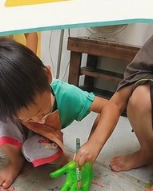
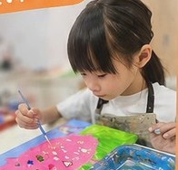
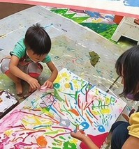
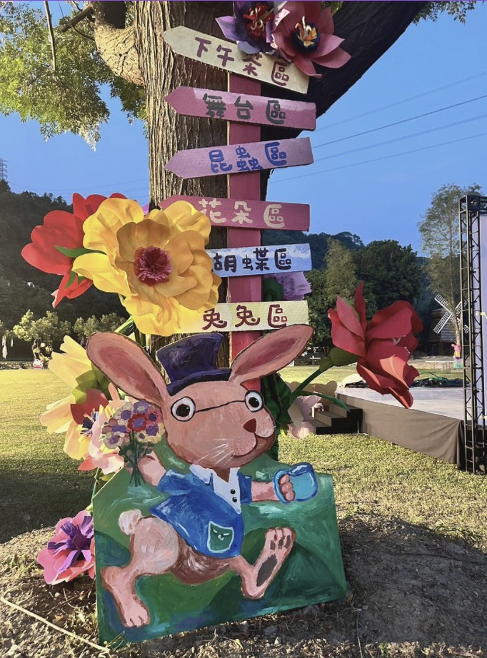

自由創作這次還有親子組！歡迎大人小孩一起來玩。用壓克力、長型畫布與自由創作，讓孩子把想像畫成獨一無二的作品。
這是一場適合假日參與的壓克力畫布創作。孩子可以自由創作、發揮想像；親子組也能一起完成大尺寸畫布，留下共同創作的週日記憶。

自由創作
發揮想像
親子同樂請依孩子年齡與想參與的創作方式選擇場次。活動名額有限，建議先透過 LINE 索取報名表與最新名額。
一大一小、兩個人的組合，是最舒服的創作方式。
如果有兩位三歲以上幼兒園孩子，建議由兩位大人帶領，報名兩組個別創作。
三歲以下孩子不佔名額，需由家長於課程中安撫照護。
台中市北屯區昌平路一段77號
台中市南屯區文心南五路一段312號
週日玩藝術保留假日的輕鬆，也把創作拉進真實空間：孩子可以畫、可以看、可以靠近自己的作品。
